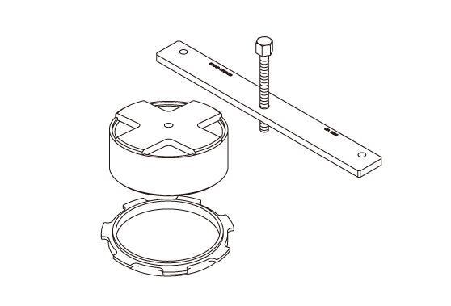
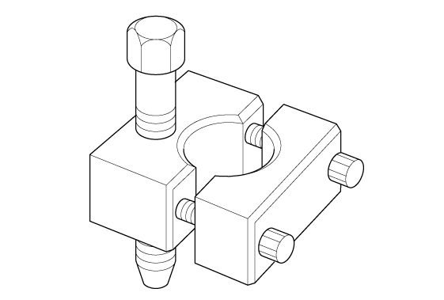

LEMON Manuals
: Even more car manuals for everyone: 1960-2025
Home
>>
Honda
>>
2016
>>
Civic LX, 4D Sedan, Automatic CVT Trans
>>
Repair and Diagnosis
>>
Transmission
>>
Automatic Trans
>>
Continuously Variable Transaxle (CVT) - Testing & Troubleshooting (Adjustment - Inspection)
>>
Adjustment
>>
Input Shaft Thrust Clearance Adjustment (K20C2, CVT model)
>>
Notes
Input Shaft Thrust Clearance Adjustment (K20C2, CVT model): Notes
Special Tools Required
Image
Description/Tool Number

Courtesy of HONDA, U.S.A., INC.
Reverse Brake Spring Compressor Set 070AF-5T0A100

Courtesy of HONDA, U.S.A., INC.
Mainshaft Holder 07GAJ-PG20110
Courtesy of HONDA, U.S.A., INC.
Snap Ring Pliers 07LGC-0010100
 Courtesy of HONDA, U.S.A., INC.
Courtesy of HONDA, U.S.A., INC.